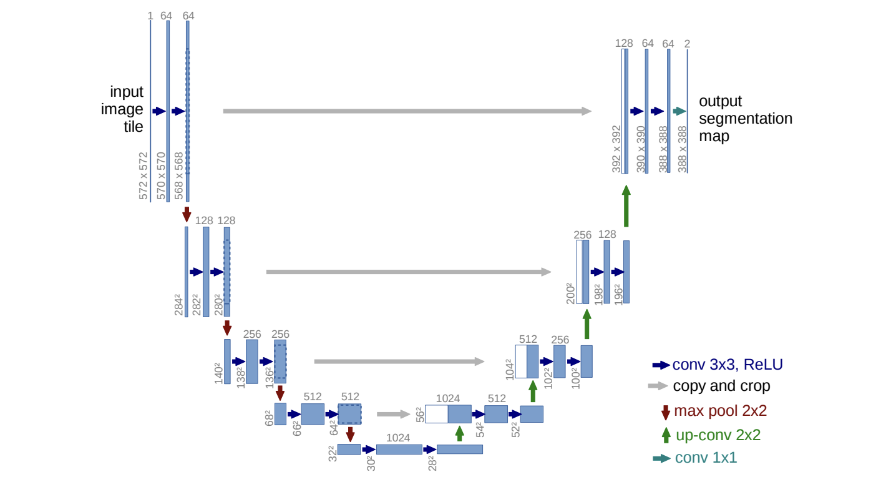

High Level Introduction to Capsa with a Real World Problem#
There are two axes of neural network uncertainty that can be modeled: - uncertainty in the data, called aleatoric uncertainty. This could be for example sensor noise or motion noise, resulting in uncertainty which cannot be reduced even if more data were to be collected. - uncertainty in the prediction, called epistemic uncertainty. It can be explained away given enough data, and is often referred to as model uncertainty.
In this notebook we will train models which can predict both types of uncertainty. We will see that model exhibits - increased aleatoric uncertainty on object boundaries and for objects far from the camera - increased epistemic uncertainty for semantically and visually challenging pixels.
However modeling only one of them comes at a cost. Out-of-distribution examples, which can be identified with epistemic uncertainty, cannot be identified with aleatoric uncertainty alone and vice versa. Thus we will combine both of the uncertainties to leverage their strength.
[ ]:
!pip install capsa
# download helper functions for this tutorial
!git clone --depth 1 https://github.com/themis-ai/capsa.git
%cd /content/capsa/notebooks/utils/depth
# download and extract dataset
!wget -q http://argo-1.themisai.io/demos/nyu_depth/nyu.h5
[2]:
import tensorflow as tf
import config as config
[3]:
from utils import get_datasets
ds_train, ds_test = get_datasets(
id_path = "nyu.h5",
)
In this tutorial we will demonstrate how capsa can be used as a large-scale risk and uncertainty benchmarking framework for existing methods in the community. To that end, we will train a U-Net style model on the task of monocular end-to-end depth estimation using the “NYU Depth V2” dataset (RGB-to-depth image pairs of indoor scenes). Specifically, model’s final layer outputs a single H × W activation map.
Base model#
First, we initialize a base model and visualize its prediction. A “base model” could be any keras Sequential or Functional model for any arbitrary task.
We will use a U-Net style model for our task. On a high level through its contracting path (left side) the model is able to capture the global context information, however for the pixel level tasks (e.g. semantic segmentation, depth estimation) granular local information is also required, therefore in the expansive path (right side) the architecture combines the upsampled global representation with the local context from the corresponding earlier layers. This allows the network to propagate context information to higher resolution layers. As a consequence, the expansive path is more or less symmetric to the contracting path, and yields a u-shaped architecture.

[4]:
from models import unet
base_model = unet(compile=True)
Let’s visualize predictions of the model.
[5]:
from utils import vis_depth_map
vis_depth_map(base_model, ds_test, plot_risk=False)
As expected, the model outputs random predictions… It’s time to train it!
[6]:
history = base_model.fit(ds_train, epochs=config.EP,
validation_data=ds_test,
)
Epoch 1/20
256/256 [==============================] - 19s 69ms/step - loss: 0.0709 - val_loss: 0.0442
Epoch 2/20
256/256 [==============================] - 17s 68ms/step - loss: 0.0343 - val_loss: 0.0262
Epoch 3/20
256/256 [==============================] - 18s 68ms/step - loss: 0.0203 - val_loss: 0.0157
Epoch 4/20
256/256 [==============================] - 18s 69ms/step - loss: 0.0110 - val_loss: 0.0099
Epoch 5/20
256/256 [==============================] - 18s 69ms/step - loss: 0.0066 - val_loss: 0.0092
Epoch 6/20
256/256 [==============================] - 18s 70ms/step - loss: 0.0050 - val_loss: 0.0044
Epoch 7/20
256/256 [==============================] - 18s 70ms/step - loss: 0.0038 - val_loss: 0.0034
Epoch 8/20
256/256 [==============================] - 18s 70ms/step - loss: 0.0030 - val_loss: 0.0031
Epoch 9/20
256/256 [==============================] - 18s 70ms/step - loss: 0.0027 - val_loss: 0.0027
Epoch 10/20
256/256 [==============================] - 18s 70ms/step - loss: 0.0022 - val_loss: 0.0024
Epoch 11/20
256/256 [==============================] - 18s 70ms/step - loss: 0.0021 - val_loss: 0.0024
Epoch 12/20
256/256 [==============================] - 18s 70ms/step - loss: 0.0023 - val_loss: 0.0029
Epoch 13/20
256/256 [==============================] - 18s 70ms/step - loss: 0.0019 - val_loss: 0.0019
Epoch 14/20
256/256 [==============================] - 18s 70ms/step - loss: 0.0017 - val_loss: 0.0020
Epoch 15/20
256/256 [==============================] - 18s 70ms/step - loss: 0.0018 - val_loss: 0.0021
Epoch 16/20
256/256 [==============================] - 18s 70ms/step - loss: 0.0016 - val_loss: 0.0018
Epoch 17/20
256/256 [==============================] - 18s 70ms/step - loss: 0.0014 - val_loss: 0.0017
Epoch 18/20
256/256 [==============================] - 18s 70ms/step - loss: 0.0014 - val_loss: 0.0018
Epoch 19/20
256/256 [==============================] - 18s 70ms/step - loss: 0.0014 - val_loss: 0.0015
Epoch 20/20
256/256 [==============================] - 18s 70ms/step - loss: 0.0014 - val_loss: 0.0013
Let’s visualize predictions of the trained model.
We see that the model produces reasonable predictions on the train and test datasets, however by default the model does not provide a risk estimate. We see that on the out of distribution dataset model’s performance is close to random, but the model cannot distinguish such out of distribution scenarios. In other words, the model cannot estimate when it’s predictions are not to be trusted therefore using such a model in production for any real world problem (and especially for time and safety critical applications) could lead to disastrous results.
[7]:
vis_depth_map(base_model, ds_test, plot_risk=False)
Capsa#
Existing algorithms to achieve risk-awareness of NNs are complex and ad-hoc. Specifically, these methods require significant engineering changes, are often developed only for particular settings, and are not easily composable.
We present Capsa – a model agnostic framework for risk estimation. Which allows for seamless and efficient integration of the uncertainty estimates to the existing models in a couple lines of code.
Wrappers transform a model into a risk-aware variant. They are given an arbitrary neural network and, while preserving the structure and function of the network, add and modify the relevant components of the model in order to be a drop-in replacement while being able to estimate the risk metric.
Capsa implements multiple different wrappers which allow us to capture different forms of risk.
Let’s see it in practice and wrap our “base model” …
1. Aleatoric Wrapper#
Allows to capture uncertainty in the data. This could be for example sensor noise or motion noise, resulting in uncertainty which cannot be reduced even if more data were to be collected. Detailed documentation could be found here.
To leverage the functionality provided by Capsa, user could simply wrap their model with one of our wrappers. Importantly, capsa works “out of the box” without requiring any modifications since it is a highly configurable, model-agnostic framework with modularity as one of the core of its design principles.
[8]:
from capsa import MVEWrapper
user_model = unet()
aleatoric_model = MVEWrapper(user_model)
aleatoric_model.compile(
optimizer=tf.keras.optimizers.Adam(learning_rate=config.LR),
loss="mse",
)
Now, let’s train a risk aware model! Note, it doesn’t take any additional steps.
[9]:
history = aleatoric_model.fit(ds_train, epochs=config.EP,
validation_data=ds_test,
)
Epoch 1/20
WARNING:tensorflow:Gradients do not exist for variables ['conv2d_37/kernel:0', 'conv2d_37/bias:0'] when minimizing the loss. If you're using `model.compile()`, did you forget to provide a `loss`argument?
WARNING:tensorflow:Gradients do not exist for variables ['conv2d_37/kernel:0', 'conv2d_37/bias:0'] when minimizing the loss. If you're using `model.compile()`, did you forget to provide a `loss`argument?
256/256 [==============================] - 20s 74ms/step - mve_compiled_loss: 0.1167 - mve_wrapper_loss: -1.6244 - val_mve_compiled_loss: 0.0492 - val_mve_wrapper_loss: -1.8938
Epoch 2/20
256/256 [==============================] - 19s 73ms/step - mve_compiled_loss: 0.0475 - mve_wrapper_loss: -2.0799 - val_mve_compiled_loss: 0.0381 - val_mve_wrapper_loss: -1.9391
Epoch 3/20
256/256 [==============================] - 19s 73ms/step - mve_compiled_loss: 0.0365 - mve_wrapper_loss: -2.4177 - val_mve_compiled_loss: 0.0381 - val_mve_wrapper_loss: -2.2012
Epoch 4/20
256/256 [==============================] - 19s 73ms/step - mve_compiled_loss: 0.0241 - mve_wrapper_loss: -2.9760 - val_mve_compiled_loss: 0.0208 - val_mve_wrapper_loss: -2.0158
Epoch 5/20
256/256 [==============================] - 19s 73ms/step - mve_compiled_loss: 0.0187 - mve_wrapper_loss: -3.2135 - val_mve_compiled_loss: 0.0112 - val_mve_wrapper_loss: -3.9911
Epoch 6/20
256/256 [==============================] - 19s 73ms/step - mve_compiled_loss: 0.0109 - mve_wrapper_loss: -3.9542 - val_mve_compiled_loss: 0.0099 - val_mve_wrapper_loss: -3.6887
Epoch 7/20
256/256 [==============================] - 19s 73ms/step - mve_compiled_loss: 0.0075 - mve_wrapper_loss: -4.2189 - val_mve_compiled_loss: 0.0072 - val_mve_wrapper_loss: -4.3475
Epoch 8/20
256/256 [==============================] - 19s 73ms/step - mve_compiled_loss: 0.0067 - mve_wrapper_loss: -4.4589 - val_mve_compiled_loss: 0.0052 - val_mve_wrapper_loss: -4.8666
Epoch 9/20
256/256 [==============================] - 19s 73ms/step - mve_compiled_loss: 0.0067 - mve_wrapper_loss: -4.7351 - val_mve_compiled_loss: 0.0046 - val_mve_wrapper_loss: -5.0845
Epoch 10/20
256/256 [==============================] - 19s 73ms/step - mve_compiled_loss: 0.0049 - mve_wrapper_loss: -5.1272 - val_mve_compiled_loss: 0.0037 - val_mve_wrapper_loss: -5.4385
Epoch 11/20
256/256 [==============================] - 19s 73ms/step - mve_compiled_loss: 0.0036 - mve_wrapper_loss: -5.3123 - val_mve_compiled_loss: 0.0034 - val_mve_wrapper_loss: -5.7237
Epoch 12/20
256/256 [==============================] - 19s 73ms/step - mve_compiled_loss: 0.0031 - mve_wrapper_loss: -5.5358 - val_mve_compiled_loss: 0.0032 - val_mve_wrapper_loss: -5.4647
Epoch 13/20
256/256 [==============================] - 19s 73ms/step - mve_compiled_loss: 0.0029 - mve_wrapper_loss: -5.5297 - val_mve_compiled_loss: 0.0031 - val_mve_wrapper_loss: -5.0414
Epoch 14/20
256/256 [==============================] - 19s 73ms/step - mve_compiled_loss: 0.0033 - mve_wrapper_loss: -5.7428 - val_mve_compiled_loss: 0.0029 - val_mve_wrapper_loss: -5.7484
Epoch 15/20
256/256 [==============================] - 19s 73ms/step - mve_compiled_loss: 0.0033 - mve_wrapper_loss: -5.4543 - val_mve_compiled_loss: 0.0028 - val_mve_wrapper_loss: -5.5491
Epoch 16/20
256/256 [==============================] - 19s 73ms/step - mve_compiled_loss: 0.0027 - mve_wrapper_loss: -6.0533 - val_mve_compiled_loss: 0.0023 - val_mve_wrapper_loss: -6.1347
Epoch 17/20
256/256 [==============================] - 19s 73ms/step - mve_compiled_loss: 0.0022 - mve_wrapper_loss: -6.1902 - val_mve_compiled_loss: 0.0022 - val_mve_wrapper_loss: -6.3634
Epoch 18/20
256/256 [==============================] - 19s 73ms/step - mve_compiled_loss: 0.0027 - mve_wrapper_loss: -5.9534 - val_mve_compiled_loss: 0.0022 - val_mve_wrapper_loss: -6.0409
Epoch 19/20
256/256 [==============================] - 19s 73ms/step - mve_compiled_loss: 0.0021 - mve_wrapper_loss: -6.3857 - val_mve_compiled_loss: 0.0021 - val_mve_wrapper_loss: -6.3746
Epoch 20/20
256/256 [==============================] - 19s 73ms/step - mve_compiled_loss: 0.0018 - mve_wrapper_loss: -6.4920 - val_mve_compiled_loss: 0.0021 - val_mve_wrapper_loss: -5.5325
Now we see that in addition to y_hat (as the base model above) our risk aware model also produces a risk estimate (we plot is as the rightmost column), this measurement reflects model’s uncertainty. We see that when we wrap the model with an aleatoric method we can successfully detect label noise or mislabeled data – the model exhibits increased aleatoric uncertainty on object boundaries, and indeed we see that the ground truth has noisy labels particularly on the edges of these objects; this could be due to sensor noise or motion noise.
[10]:
vis_depth_map(aleatoric_model, ds_test)
Let’s try out another Capsa’s wrapper, which measures a different type of risk.
2. Epistemic Wrapper#
This wrapper allows to capture uncertainty in the model prediction. As opposed to the risk estimate we saw earlier, epistemic uncertainty can be explained away given enough data / or a more expressive model, and is often referred to as model uncertainty. Detailed documentation could be found here: DropoutWrapper, VAEWrapper, EnsembleWrapper.
Same as with any other Capsa wrapper, user could simply wrap their model with it.
[11]:
from capsa import EnsembleWrapper
user_model = unet()
epistemic_model = EnsembleWrapper(user_model, num_members=3)
epistemic_model.compile(
optimizer=tf.keras.optimizers.Adam(learning_rate=config.LR),
loss="mse",
)
[12]:
history = epistemic_model.fit(ds_train, epochs=config.EP,
validation_data=ds_test,
)
Epoch 1/20
256/256 [==============================] - 55s 206ms/step - usermodel_0_compiled_loss: 0.0842 - usermodel_1_compiled_loss: 0.1010 - usermodel_2_compiled_loss: 0.1916 - average_loss: 0.1256 - val_usermodel_0_compiled_loss: 0.0557 - val_usermodel_1_compiled_loss: 0.0615 - val_usermodel_2_compiled_loss: 0.0871
Epoch 2/20
256/256 [==============================] - 53s 205ms/step - usermodel_0_compiled_loss: 0.0495 - usermodel_1_compiled_loss: 0.0540 - usermodel_2_compiled_loss: 0.0719 - average_loss: 0.0585 - val_usermodel_0_compiled_loss: 0.0437 - val_usermodel_1_compiled_loss: 0.0472 - val_usermodel_2_compiled_loss: 0.0605
Epoch 3/20
256/256 [==============================] - 53s 205ms/step - usermodel_0_compiled_loss: 0.0390 - usermodel_1_compiled_loss: 0.0419 - usermodel_2_compiled_loss: 0.0532 - average_loss: 0.0447 - val_usermodel_0_compiled_loss: 0.0347 - val_usermodel_1_compiled_loss: 0.0370 - val_usermodel_2_compiled_loss: 0.0468
Epoch 4/20
256/256 [==============================] - 53s 205ms/step - usermodel_0_compiled_loss: 0.0313 - usermodel_1_compiled_loss: 0.0333 - usermodel_2_compiled_loss: 0.0420 - average_loss: 0.0355 - val_usermodel_0_compiled_loss: 0.0281 - val_usermodel_1_compiled_loss: 0.0298 - val_usermodel_2_compiled_loss: 0.0377
Epoch 5/20
256/256 [==============================] - 53s 205ms/step - usermodel_0_compiled_loss: 0.0257 - usermodel_1_compiled_loss: 0.0272 - usermodel_2_compiled_loss: 0.0346 - average_loss: 0.0292 - val_usermodel_0_compiled_loss: 0.0235 - val_usermodel_1_compiled_loss: 0.0248 - val_usermodel_2_compiled_loss: 0.0316
Epoch 6/20
256/256 [==============================] - 53s 205ms/step - usermodel_0_compiled_loss: 0.0218 - usermodel_1_compiled_loss: 0.0230 - usermodel_2_compiled_loss: 0.0293 - average_loss: 0.0247 - val_usermodel_0_compiled_loss: 0.0202 - val_usermodel_1_compiled_loss: 0.0213 - val_usermodel_2_compiled_loss: 0.0272
Epoch 7/20
256/256 [==============================] - 53s 205ms/step - usermodel_0_compiled_loss: 0.0189 - usermodel_1_compiled_loss: 0.0199 - usermodel_2_compiled_loss: 0.0255 - average_loss: 0.0214 - val_usermodel_0_compiled_loss: 0.0177 - val_usermodel_1_compiled_loss: 0.0186 - val_usermodel_2_compiled_loss: 0.0239
Epoch 8/20
256/256 [==============================] - 53s 205ms/step - usermodel_0_compiled_loss: 0.0167 - usermodel_1_compiled_loss: 0.0176 - usermodel_2_compiled_loss: 0.0226 - average_loss: 0.0190 - val_usermodel_0_compiled_loss: 0.0158 - val_usermodel_1_compiled_loss: 0.0166 - val_usermodel_2_compiled_loss: 0.0213
Epoch 9/20
256/256 [==============================] - 53s 206ms/step - usermodel_0_compiled_loss: 0.0150 - usermodel_1_compiled_loss: 0.0158 - usermodel_2_compiled_loss: 0.0202 - average_loss: 0.0170 - val_usermodel_0_compiled_loss: 0.0143 - val_usermodel_1_compiled_loss: 0.0150 - val_usermodel_2_compiled_loss: 0.0192
Epoch 10/20
256/256 [==============================] - 53s 206ms/step - usermodel_0_compiled_loss: 0.0136 - usermodel_1_compiled_loss: 0.0143 - usermodel_2_compiled_loss: 0.0184 - average_loss: 0.0154 - val_usermodel_0_compiled_loss: 0.0130 - val_usermodel_1_compiled_loss: 0.0137 - val_usermodel_2_compiled_loss: 0.0175
Epoch 11/20
256/256 [==============================] - 53s 205ms/step - usermodel_0_compiled_loss: 0.0125 - usermodel_1_compiled_loss: 0.0131 - usermodel_2_compiled_loss: 0.0168 - average_loss: 0.0142 - val_usermodel_0_compiled_loss: 0.0120 - val_usermodel_1_compiled_loss: 0.0126 - val_usermodel_2_compiled_loss: 0.0161
Epoch 12/20
256/256 [==============================] - 53s 205ms/step - usermodel_0_compiled_loss: 0.0116 - usermodel_1_compiled_loss: 0.0121 - usermodel_2_compiled_loss: 0.0156 - average_loss: 0.0131 - val_usermodel_0_compiled_loss: 0.0111 - val_usermodel_1_compiled_loss: 0.0117 - val_usermodel_2_compiled_loss: 0.0150
Epoch 13/20
256/256 [==============================] - 53s 205ms/step - usermodel_0_compiled_loss: 0.0108 - usermodel_1_compiled_loss: 0.0113 - usermodel_2_compiled_loss: 0.0145 - average_loss: 0.0122 - val_usermodel_0_compiled_loss: 0.0104 - val_usermodel_1_compiled_loss: 0.0109 - val_usermodel_2_compiled_loss: 0.0140
Epoch 14/20
256/256 [==============================] - 53s 205ms/step - usermodel_0_compiled_loss: 0.0101 - usermodel_1_compiled_loss: 0.0106 - usermodel_2_compiled_loss: 0.0135 - average_loss: 0.0114 - val_usermodel_0_compiled_loss: 0.0098 - val_usermodel_1_compiled_loss: 0.0102 - val_usermodel_2_compiled_loss: 0.0131
Epoch 15/20
256/256 [==============================] - 53s 206ms/step - usermodel_0_compiled_loss: 0.0095 - usermodel_1_compiled_loss: 0.0099 - usermodel_2_compiled_loss: 0.0127 - average_loss: 0.0107 - val_usermodel_0_compiled_loss: 0.0092 - val_usermodel_1_compiled_loss: 0.0097 - val_usermodel_2_compiled_loss: 0.0124
Epoch 16/20
256/256 [==============================] - 53s 206ms/step - usermodel_0_compiled_loss: 0.0090 - usermodel_1_compiled_loss: 0.0094 - usermodel_2_compiled_loss: 0.0120 - average_loss: 0.0101 - val_usermodel_0_compiled_loss: 0.0088 - val_usermodel_1_compiled_loss: 0.0091 - val_usermodel_2_compiled_loss: 0.0117
Epoch 17/20
256/256 [==============================] - 53s 205ms/step - usermodel_0_compiled_loss: 0.0085 - usermodel_1_compiled_loss: 0.0089 - usermodel_2_compiled_loss: 0.0114 - average_loss: 0.0096 - val_usermodel_0_compiled_loss: 0.0083 - val_usermodel_1_compiled_loss: 0.0087 - val_usermodel_2_compiled_loss: 0.0111
Epoch 18/20
256/256 [==============================] - 53s 205ms/step - usermodel_0_compiled_loss: 0.0081 - usermodel_1_compiled_loss: 0.0085 - usermodel_2_compiled_loss: 0.0108 - average_loss: 0.0091 - val_usermodel_0_compiled_loss: 0.0079 - val_usermodel_1_compiled_loss: 0.0083 - val_usermodel_2_compiled_loss: 0.0106
Epoch 19/20
256/256 [==============================] - 53s 205ms/step - usermodel_0_compiled_loss: 0.0078 - usermodel_1_compiled_loss: 0.0081 - usermodel_2_compiled_loss: 0.0103 - average_loss: 0.0087 - val_usermodel_0_compiled_loss: 0.0076 - val_usermodel_1_compiled_loss: 0.0079 - val_usermodel_2_compiled_loss: 0.0101
Epoch 20/20
256/256 [==============================] - 53s 205ms/step - usermodel_0_compiled_loss: 0.0074 - usermodel_1_compiled_loss: 0.0077 - usermodel_2_compiled_loss: 0.0099 - average_loss: 0.0084 - val_usermodel_0_compiled_loss: 0.0073 - val_usermodel_1_compiled_loss: 0.0076 - val_usermodel_2_compiled_loss: 0.0097
Same as earlier let’s visualize the predictions of the risk aware model.
[13]:
vis_depth_map(epistemic_model, ds_test)
With and epistemic method, we are able to capture uncertainty in model’s prediction itself. We see that increased epistemic uncertainty roughly corresponds to the semantically and visually challenging pixels where the model is making errors.
To sum up 🏆#
With
Capsawe converted our existing model to its risk aware variant with one line of code.We trained this model with the same steps as the initial (not wrapped) model.
We saw different risk estimates in action, and explaind their semantic meaning!
In the next part of the tutorial (part 6) we’ll use the risk estimates to solve an actual real world problem.
[ ]: